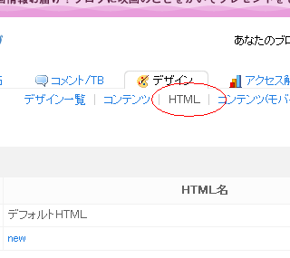

タグページをブログカスタマイズ
ブログの"タグ機能"で記事にラベルを付けて分類しておくと、ブログサービス側からのアクセスを見込めます。
シーサーブログのタグページの場合、自分がつけたタグ一覧などのページが自動で作成されます。
今回はこのタグページをブログカスタマイズしてみました。
シーサーブログのタグページのカスタマイズ方法
今回タグページをブログカスタマイズした部分は、タグ一覧（ /tag/ ）の部分と個別キーワード（ /tag/キーワード ）のふたつの部分です。
【追記：】
タグ一覧の部分は仕様が変更されて表示されなくなりました。
なので当ページの内容は使えません。
タグページの一覧の部分
- title を「ブログ名 - タグ一覧」へ変更
- サイドバーを非表示
- meta keywords を非表示
- タグクラウド上部に検索窓設置
このなかで、メタタグのキーワード指定は一覧の場合はたくさんのキーワードが表示されるんで、ひとつに固定する必要はないんじゃないかなって気がするんです。なので meta キーワードは非表示に設定してみました。
あと、サイドバーを非表示というのは気分的なものです。
タグページのようなコンテンツのない部分にアドセンスが表示されるとまずいんですが、どっちみちサイドバーには何もつけてないのでいいかなって思ったんですが、ふいんき的に非表示の方がいいんじゃないかなって気がするんです。
個別キーワードの部分
- 「タグ / キーワード」をＨ１
- 「キーワードの記事」をＨ２
- meta keywords に「キーワード」指定
- タグクラウド上部に検索窓設置
個別キーワードの部分の部分はタグ一覧のページからキーワードを選択した際に表示されるページのことです。
こちらのページではキーワードが選択したものひとつに決まるので、meta キーワードで選択したものがはいるようにしてみました。
「タグ / キーワード」に見出し要素のＨ１を指定して、「キーワードの記事」をＨ２に設定しています。さらに、検索窓なんかもくっつけてブログカスタマイズしてみました。
タグページのブログカスタマイズ方法
実際にタグページをブログカスタマイズする場合は、「デザイン - ＨＴＭＬ - ＨＴＭＬの追加」で新規にＨＴＭＬページを指定して作成するといいと思います。
個別ページやカテゴリページの場合ではコンテンツのカテゴリの箇所でブログカスタマイズできますが、タグページの場合はＨＴＭＬの追加でブログカスタマイズできちゃうみたいなんです。
ただ、ぶっちゃけ面倒くさいんで、わたしのようなブログ初心者さまにはちょっとどうなんだろって感じなんです。
詳細な場合わけをしながらのブログカスタマイズになっちゃうんで、シーサーブログの独自タグを駆使しながらあれこれやっていくと、やんなっちゃうんです。
でも一応、手順を記入しておきます。
ブログカスタマイズに失敗したときのために、現在の html ソースは保存しておいてからあれこれしてみるといいのではないかなと思います。
-
「デザイン - ＨＴＭＬ - ＨＴＭＬの追加」で新規にＨＴＭＬページを追加して作成する。

head タグの html を独自タグを使用しながら、トップページ、個別ページ、カテゴリページ、過去ログ、タグページの５種類で場合わけする。
例えば、トップページなら <% if:page_name eq 'index' -%> ほにゃらら <% /if -%> みたいな感じでそれぞれのページでの head タグ内容を個別に指定するという感じです。
トップページなどの場合は以前の記事に書いているので、ここで省略しますが、タグページの <% if:page_name eq 'tag' -%> の箇所にさらに、<% if:tag %> を指定して、meta キーワードの非表示設定をするという感じです。
if タグを使用する場合は空白になってしまう場合があるので、改行しないでhtmlを記入していくといいと思います。
実際の html ソースはこんな感じになります。
head タグのカスタマイズが終了したら、次に個別キーワードの部分でＨ１化やサイドバーの非表示設定、検索窓の設置なんかをしてみるといいかと思います。
設定する箇所は、head タグを下にくだっていって、 <% if:page_name eq 'tag' -%> という箇所が出てくると思うんですけど、そこの部分をちょこちょこやると、タグページのブログカスタマイズができちゃうんです。
わたしは、この <% if:page_name eq 'tag' -%> の直下に検索窓の html ソースを挿入してタグクラウドの上部に検索窓が表示されるようにしています。
次に <% if:tag %> の部分が個別キーワードの部分なんで、そこに見出し要素のＨ１やＨ２を挿入したりしています。
実際の html ソースはこんな感じです。
さらにサイドバーを非表示に設定する場合はこんな感じで、シーサーブログの独自タグを使用しながら設定していますが、使用しているレイアウトによって実際のソースは変わってくると思います。
- ページごとに違った感じにブログカスタマイズ
シーサーブログはわりとＨＴＭＬ編集がしやすいブログだと思いますが、if文とかシーサーブログの独自タグなどがけっこうわかりにくかったりもするものです。 カテゴリページやトップページ、記事ページごとに違... - カテゴリページのナビをブログカスタマイズ
この前は最新の記事欄をブログカスタマイズして、おとといは過去ログページもブログカスタマイズしたんで、今日はカテゴリページをいじってみようと思います。 最近の記事欄をブログカスタマイズ 過去ログをプ... - 過去ログをプルダウンでブログカスタマイズ
先日は最近の記事欄をブログカスタマイズしてみたのですが、今回は過去ログのカスタマイズに挑戦してみました。過去ログカスタマイズっていっても個別記事やカテゴリページの過去ログリンクをプルダウンするって感じ... - 最近の記事欄をブログカスタマイズ
シーサーブログで最近の記事欄を何気にカスタマイズしてみました。以前にも最新の記事欄をカスタマイズしてみたのですが、最新記事が一番上にくるようになったんでなかなかいい感じだなって思ってます。 シーサー... - フッターのブログカスタマイズ css
ブログカスタマイズもあれこれやってきましたが、今回はフッターの簡単カスタマイズに挑戦してみました。お手本にしたのは身近なところで、シーサーブログ管理画面の下の方のやつです。 - 過去ログを overflow でブログカスタマイズ
以前に過去ログをプルダウン化してブログカスタマイズしてみたんですが、やっぱ css で overflow 指定してスクロール型の擬似フレームっぽい方がいいかなって気もするんです。overflow でブ... - ブログのタグタイトルをSEOカスタマイズ
今日のブログカスタマイズは、タグページのタイトルタグや説明文をSEO的にカスタマイズしようと思います。タグページの例としてはてなダイアリーやライブドアブログなんかのを見てみると、こんな感じになっている...